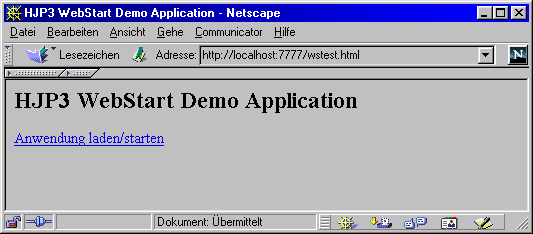
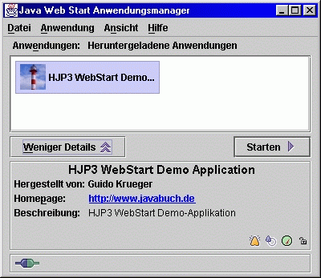

14.5 Java Web Start
14.5.1 Einleitung und Funktionsweise
Applets werden ab Kapitel 40
erklärt. Sie waren es, die mit der Möglichkeit, eigenständige
Programme mit grafischer Oberfläche in Webseiten einzubinden,
einen großen Teil der anfänglichen Begeisterung für
Java auslösten. Später erkannte man noch einen zweiten,
strategischen Vorteil: Diese Programme mussten nicht installiert
werden, sondern wurden einfach aufgerufen und waren immer up-to-date.
Das brachte »gute alte Zeiten« in Erinnerung, bei denen
die Anwender an einfachen Terminals saßen, die - wenn sie wirklich
einmal defekt waren - ohne großen Aufwand ausgetauscht werden
konnten.
Schnell war die Idee geboren, dies mit aktueller (Java-)Technologie
nachzuahmen. Warum nicht alle benötigten Programme als Applets
implementieren, die bei Bedarf von einem zentralen Server geladen
werden? Man hatte nämlich erkannt, dass in den Unternehmen ein
Großteil der durch Computerarbeitsplätze verursachten Kosten
gar nicht bei deren Kauf entstanden, sondern erst danach. Etwa durch
Updates, Reparaturen und Wartungen; aber auch durch Probleme, die
durch nicht verfügbare, fehlerhafte oder inkonsistente Programmversionen
entstanden. Die aus dieser Idee entstandenen Java Workstations
konnten sich allerdings nicht durchsetzen. Trotz vielversprechender
Anfänge wurden die durch langsame Netzwerkverbindungen oder unzulängliche
Java-Implementierungen in den Browsern verursachten Probleme nicht
gelöst. Die Java-Stations verschwanden ebenso schnell von der
Bildfläche, wie sie zuvor aufgetaucht waren.
Während der Entwicklung des JDK 1.3 brachte SUN eine Technologie
auf den Markt, mit der die Vorteile von Applets und Applikationen
kombiniert werden sollten. Sie wird als Java Web Start (kurz
WebStart) bezeichnet und ist seit dem
JDK 1.4 fester Bestandteil jedes JDK und JRE. Java Web Start bietet
die Möglichkeit, Applikationen über einen Web-Server
automatisch zu laden und zu aktualisieren, ohne dass dazu eine lokale
Installation oder das manuelle Einspielen eines Softwareupdates erforderlich
wäre. Sie kombiniert so die Installationsfreiheit von Applets
mit der Geschwindigkeit und Flexibilität von Java-Applikationen.
Wir wollen uns einmal ansehen, wie das Ganze funktioniert:
- Der Entwickler liefert seine Java-Applikation in dem von WebStart
benötigten Format aus. Dazu muss er alle Bestandteile seiner
Applikation (Klassen und Ressourcen) in einem oder mehreren jar-Archiven
unterbringen. Zusätzlich muss er eine Deskriptordatei zur Verfügung
stellen, in der alle von WebStart benötigten Informationen untergebracht
sind.
- Der Administrator stellt eine Webseite zur Verfügung, von
der die WebStart-Applikation geladen werden kann. Er kopiert dazu
alle jar-Dateien und die Deskriptordatei auf den Server und macht
Letztere über einen Link den potenziellen Anwendern verfügbar.
Einmalig muss er seinen Web-Server so konfigurieren, dass dieser Deskriptordateien
an ihrer Extension .jnlp erkennt und
den Browsern den korrekten Mime-Typ application/x-java-jnlp-file
überträgt.
- Möchte der Anwender eine Java-Applikation verwenden, die
noch nicht lokal auf seinem Rechner verfügbar ist, ruft er die
vom Administrator zur Verfügung gestellte Webseite auf und klickt
auf den Link mit der Deskriptor-Datei. Diese wird vom Web-Browser
geladen, der WebStart-Anwendungsmanager wird automatisch aufgerufen
und überprüft, ob die gewünschte Applikation bereits
lokal vorhanden und alle Bestandteile auf dem neuesten Stand sind.
Ist das der Fall, wird die Applikation gestartet, andernfalls werden
zuvor die fehlenden Bestandteile nachgeladen. Der Anwender kann mit
der Applikation nun wie mit jedem anderen Java-Programm arbeiten.
- Hat der Anwender die Applikation bereits einmal geladen, ist die
Webseite für weitere Aufrufe nicht mehr unbedingt erforderlich.
WebStart speichert die Bestandteile der Applikation in einem Cache
und kann sie auch dann zur Verfügung stellen, wenn keine Verbindung
zu dem Server besteht, von dem sie heruntergeladen wurde. Dazu ruft
der Anwender einfach das (zusammen mit dem JDK oder JRE installierte)
Programm »Java Web Start« auf und wählt aus der Liste
der bereits heruntergeladenen Programme das zu startende aus. Wird
das Programm oft benötigt, kann der Anwender sich eine Verknüpfung
auf dem Desktop oder einen Eintrag im Startmenü erstellen lassen.
14.5.2 Erstellen einer WebStart-Applikation
Erzeugen der jar-Dateien
Wir wollen uns in diesem Abschnitt die Aufgabe stellen, das Beispielprogramm
JTree 3 aus Listing 39.13
in eine WebStart-Applikation zu verwandeln. Der Übersichtlichkeit
halber erstellen wir dazu ein Unterverzeichnis wstest,
in dem wir alle benötigten Dateien sammeln. Auf der DVD zum Buch
befindet sich dieses unterhalb der Beispieldateien, also direkt im
Verzeichnis examples. Da es auf der DVD
bereits mit allen benötigten Dateien gefüllt ist, sind die
nachfolgend beschriebenen Schritte (bei Verwendung dieses Verzeichnisses)
redundant. Zum Lernen sollten sie aber dennoch nachvollzogen werden.
Zunächst kopieren wir die Dateien Listing3913.java
und WindowClosingAdapter.java in das
Verzeichnis und kompilieren sie:
javac *.java
Nach dem Kompilieren befinden sich die .class-Dateien
Listing3913.class und WindowClosingAdapter.class
in diesem Verzeichnis. Sie werden nun in ein jar-Archiv wstest.jar
verpackt:
jar cvf wstest.jar Listing3813.class WindowClosingAdapter.class
Anlegen der Deskriptordatei
Der nächste Schritt besteht darin, die Deskriptordatei zu unserem
WebStart-Projekt anzulegen. Hierbei handelt es sich um eine XML-Datei
mit der Erweiterung .jnlp,
in der alle Informationen untergebracht sind, die der WebStart-Anwendungsmanager
für das Laden, Ausführen und Darstellen der Applikation
benötigt. Sie heißt in unserem Beispiel wstest.jnlp
und hat folgenden Inhalt:
001 <?xml version="1.0" encoding="utf-8"?>
002
003 <!-- JNLP File fuer HJP WebStart Demo-Applikation -->
004 <jnlp codebase="http://localhost:7777/" href="wstest.jnlp">
005
006 <information>
007 <title>HJP WebStart Demo Application</title>
008 <vendor>Guido Krueger</vendor>
009 <homepage href="http://www.javabuch.de"/>
010 <description>HJP WebStart Demo Application</description>
011 <icon href="wstest.gif"/>
012 <offline-allowed/>
013 </information>
014
015 <information locale="de">
016 <description>HJP WebStart Demo-Applikation</description>
017 <offline-allowed/>
018 </information>
019
020 <security>
021 <!-- <all-permissions/> -->
022 </security>
023
024 <resources>
025 <j2se version="1.6+"/>
026 <jar href="wstest.jar"/>
027 </resources>
028
029 <application-desc main-class="Listing3813"/>
030
031 </jnlp>
|
Listing 14.10: Eine WebStart-Deskriptordatei
Die Datei besteht aus dem jnlp-Element
und vier Deskriptoren. Das jnlp-Element
enthält die Attribute codebase
und href. In codebase
wird das Basisverzeichnis für alle relativen URLs angegeben,
href ist die Lokation der jnlp-Datei
selbst. localhost:7777 bedeutet,
dass auf dem eigenen Rechner ein Web-Server auf TCP-Port 7777 läuft.
Wir werden später noch zeigen, wie der in Abschnitt 48.3.3
vorgestellte ExperimentalWebServer
für diesen Zweck verwendet werden kann. Alle URLs innerhalb der
Datei können entweder absolut oder relativ zur codebase
angegeben werden.
Die vier Deskriptoren haben folgende Bedeutung:
- In information werden beschreibende
Angaben zur Applikation gemacht. Neben Titel, Icon, Beschreibung und
Hersteller des Programms kann eine Homepage angegeben werden, auf
der der Anwender weitere Informationen zum Programm finden kann. Wichtig
ist der Eintrag offline-allowed.
Er gibt an, dass das Programm auch ohne Verbindung zum Internet (genauer:
zu seinen Download-Quellen) betrieben werden kann. Das geht natürlich
nur dann, wenn der WebStart-Anwendungsmanager bereits alle Teile der
Applikation geladen und lokal im Cache gespeichert hat. In diesem
Fall würde dann auch nicht geprüft, ob Teile der Anwendung
veraltet sind und ein Update fällig wäre.
Das information-Element kann
ein optionales locale-Argument
haben und mehrfach vorhanden sein. So lassen sich Angaben machen,
die nur für eine bestimmte Sprachversion gelten. In unserem Beispiel
gibt es ein zweites information-Element,
in dem die description in deutscher
Sprache angegeben wird. Als mögliche Werte für das locale-Argument
können die in Abschnitt 18.4
erläuterten Sprachen-/Länderstrings der Locale-Klasse
verwendet werden.
- Das Element security dient
zur Angabe von sicherheitsrelevanten Informationen. Sein wichtigstes
Element ist all-permissions,
mit dem der volle Zugriff auf alle Systemressourcen gefordert wird.
Analog zu einem Applet wird dieser aber nur dann gewährt, wenn
alle jar-Dateien signiert sind und der Anwender das zum Signieren
verwendete Zertifikat akzeptiert. In unserem Beispiel wurde dieses
Element auskommentiert und die Anwendung hat daher nur eingeschränkten
Zugriff auf Systemressourcen. Ähnlich wie ein Applet kann eine
unsignierte WebStart-Applikation daher keinen nennenswerten Schaden
am System anrichten. Allerdings sind diese Einschränkungen etwas
weniger ausgeprägt als bei Applets und es gibt einige APIs, um
in kontrollierter Weise auf diese Systemressourcen zuzugreifen.
- Das Element resources dient
dazu, die zum Betrieb der Anwendung erforderlichen Ressourcen zu spezifizieren.
Hier wird angegeben, welche Java-Version zum Starten der Anwendung
verwendet werden soll (jede WebStart-Applikation kann ihre eigene
haben) und welche jar-Dateien oder plattformspezifischen Libraries
benötigt werden. In unserem Beispiel soll die Anwendung mit dem
JRE 1.3 oder höher betrieben werden und die zum Betrieb erforderliche
jar-Datei wstest.jar soll relativ zur
codebase geladen werden.
- Das letzte Element application-desc
gibt an, wie die Applikation zu starten ist. In unserem Beispiel wird
lediglich der Name der Klasse mit der main-Methode
benötigt. Zusätzlich könnten hier bei Bedarf argument-Unterelemente
angegeben werden, die beim Aufruf als Parameter an die Anwendung übergeben
werden.
Die Anwendung auf dem Web-Server installieren
Zunächst benötigen wir für unsere Beispielapplikation
einen Webserver. Der Einfachheit halber wollen wir dazu den in Abschnitt 48.3.3
vorgestellten ExperimentalWebServer
verwenden. Wir kopieren dazu die Datei ExperimentalWebServer.java
aus dem Verzeichnis examples
ebenfalls in unser Beispielverzeichnis und übersetzen sie:
javac ExperimentalWebServer.java
Wir wollen nun noch eine einfache HTML-Datei wstest.html
zum Starten der WebStart-Applikation erstellen. Sie enthält im
Wesentlichen einen Link auf die jnlp-Datei:
001 <html>
002
003 <head>
004 <title>HJP WebStart Demo Application</title>
005 </head>
006
007 <body>
008
009 <h2>HJP WebStart Demo Application</h2>
010
011 <a href="wstest.jnlp">Anwendung laden/starten</a>
012
013 </body>
014
015 </html>
|
Listing 14.11: Die HTML-Datei zum Aufruf der WebStart-Applikation
Zusätzlich müssen wir die in der jnlp-Datei angegebene Icon-Datei
wstest.gif in unser Beispielverzeichnis
kopieren. Anschließend können wir den Web-Server starten:
java ExperimentalWebServer 7777
Starten der Anwendung
Zum erstmaligen Starten der Anwendung wird die Webseite mit dem Link
auf die jnlp-Datei aufgerufen:

Abbildung 14.3: Die Startdatei der WebStart-Anwendung im Browser
Wird nun der Link »Anwendung laden/starten« angeklickt,
lädt der Browser die jnlp-Datei und ruft als zugehörige
Applikation den WebStart-Applikationsmanager auf. Dieser liest die
Datei ein und lädt alle darin beschriebenen Ressourcen. Anschließend
wird die Applikation gestartet und wir sehen das in Abbildung 39.10
gezeigte Programm.
Beim Herunterladen hat der WebStart-Applikationsmanager alle Dateien
der Anwendung in seinen lokalen Cache kopiert. Die HTML-Datei wird
nun zum Starten nicht mehr unbedingt benötigt. Stattdessen kann
der WebStart-Applikationsmanager direkt aufgerufen werden. Nach einem
Klick auf den Menüpunkt »Ansicht.Heruntergeladene Anwendungen«
stellt er sich wie folgt dar:

Abbildung 14.4: Der WebStart-Applikationsmanager
Durch Drücken des »Starten«-Buttons wird unsere Anwendung
gestartet. Die internen Abläufe unterscheiden sich dabei nicht
von denen beim Starten über den Link im Browser. Zunächst
wird stets die jnlp-Datei geladen und alle darin beschriebenen Ressourcen
werden überprüft bzw. aktualisiert. Sind alle Dateien verfügbar,
wird die Anwendung gestartet. Taucht ein Problem auf, bricht WebStart
den Startvorgang ab und gibt eine Fehlermeldung aus. Wir wollen hier
nicht weiter auf Details eingehen; der WebStart-Applikationsmanager
ist einfach aufgebaut und seine Funktionen sind weitgehend selbst
erklärend.
Wird eine WebStart-Anwendung das zweite Mal gestartet, fragt der Anwendungsmanager,
ob die Anwendung auf dem Desktop bzw. im Startmenü verankert
werden soll. Stimmt der Anwender zu, kann sie anschließend auch
auf diesem Weg gestartet werden.
14.5.3 Das jnlp-API
Services
Eingangs wurde schon erwähnt, dass unsignierte WebStart-Applikationen
nur eingeschränkten Zugriff auf lokale Systemressourcen haben.
Zwar ist - anders als bei Applets - der Aufruf von System.exit
erlaubt. Dennoch gibt es einige Einschränkungen:
- Der unkontrollierte Zugriff auf das lokale Dateisystem ist nicht
erlaubt.
- Alle jar-Dateien müssen von demselben Host geladen werden.
- Netzwerkverbindungen dürfen nur mit dem Host betrieben werden,
vom dem die jar-Dateien geladen wurden.
- Native Libraries sind nicht erlaubt.
- Der Zugriff auf System-Properties ist eingeschränkt.
Damit unsignierte WebStart-Anwendungen dennoch ein gewisses Maß
an praxisrelevanter Funktionalität anbieten können, stellt
die WebStart-Laufzeitumgebung einige Services
zur Verfügung, über die Anwendungen in kontrollierter Weise
auf Systemressourcen zugreifen können:
- Der BasicService
stellt (ähnlich dem AppletContext)
Methoden zur Interaktion mit der Laufzeitumgebung zur Verfügung.
- Der ClipboardService
bietet Zugriff auf die systemweite Zwischenablage.
- Der DownloadService
erlaubt es einer Applikation, zu kontrollieren, wie ihre Ressourcen
heruntergeladen und gecacht werden.
- Mit dem FileOpenService
kann die Anwendung mit Hilfe eines DateiÖffnen-Dialogs lokale
Dateien lesen.
- Mit dem FileSaveService
kann die Anwendung mit Hilfe eines DateiSpeichern-Dialogs lokale Dateien
schreiben.
- Der PrintService
erlaubt es der Anwendung, auf den Drucker zuzugreifen.
- Der PersistenceService
erlaubt das Erzeugen und Lesen lokaler persistenter Daten (ähnlich
den Cookies in Web-Browsern).
 |
|
|
|
All diese Services sind insofern als relativ sicher anzusehen, als
sie dem Programm entweder nur sehr beschränkten Zugriff auf Systemressourcen
erlauben (z.B. ClipboardService,
PersistenceService)
oder der Anwender per GUI-Dialog ihrer Benutzung zustimmen muss und
somit selbst entscheiden kann, welche konkreten Ressourcen verwendet
werden (z.B. FileOpenService,
FileSaveService,
PrintService).
Dennoch sollten unsignierte WebStart-Applikationen aus potenziell
unsicheren Quellen mit der nötigen Vorsicht verwendet werden.
Einerseits ist nicht auszuschließen, dass man als Anwender im
Eifer des Gefechts einmal unbeabsichtigt einer Service-Nutzung zustimmt,
die später Schaden anrichtet. Andererseits sind Denial-of-Service-Attacken
nicht auszuschließen. Hierbei verwendet eine bösartige
Anwendung eine Ressource in so hohem Maße, dass sie für
den ordnungsgemäßen Betrieb anderer Anwendungen nicht mehr
ausreichend zur Verfügung steht. Beispiele sind etwa Programme,
die 100 Prozent CPU-Last verursachen oder solche, die das Dateisystem
durch Erzeugen riesiger Dateien zum Überlauf bringen. Gegen derartige
Programme bieten auch die Service-Einschränkungen der WebStart-Applikationen
keinen Schutz. |
|
|
|
Ein einfaches Beispiel
In diesem Abschnitt wollen wir uns ein einfaches Beispiel für
die Verwendung des jnlp-API ansehen. Ein Programm soll dem Anwender
einen DateiÖffnen-Dialog präsentieren und den Inhalt der
darin ausgewählten Datei auf der Konsole ausgeben (sie lässt
sich im WebStart-Applikationsmanager im Dialog »Datei.Einstellungen.Erweitert«
sichtbar machen). Auf die übrigen Services wollen wir nicht weiter
eingehen, denn ihre Anwendung ähnelt der hier beschriebenen.
Weitere Details zu den Services sind in der jnlp-API-Dokumentation
zu finden.
Soll ein WebStart-Programm auf einen jnlp-Service zugreifen, muss
dieser zunächst mit Hilfe der Klasse ServiceManager
aus dem Paket javax.jnlp
angefordert werden:
public static java.lang.Object lookup(java.lang.String name)
throws UnavailableServiceException
|
javax.jnlp.ServiceManager |
Die Methode lookup
erwartet einen String
mit dem Servicenamen als Argument. Dies muss ein qualifizierter Klassenname
sein, etwa »javax.jnlp.FileOpenService« oder »javax.jnlp.PrintService«.
Kann der Service nicht zur Verfügung gestellt werden (die meisten
Services sind optional und müssen nicht von allen WebStart-Clients
implementiert werden), wird eine Ausnahme des Typs UnavailableServiceException
ausgelöst. Andernfalls wird der Rückgabewert auf den gewünschten
Typ konvertiert und kann dann verwendet werden.
Die nun folgenden Schritte sind Service-spezifisch. Der FileOpenService
stellt beispielsweise folgende Methode zur Verfügung, um einen
DateiÖffnen-Dialog zu erzeugen:
public FileContents openFileDialog(
java.lang.String pathHint,
java.lang.String[] extensions
)
throws java.io.IOException
|
javax.jnlp.FileOpenService |
Das erste Argument pathhint
ist ein Vorgabewert der Anwendung für das Verzeichnis, aus dem
die Datei geladen werden soll. Das zweite Argument enthält eine
Liste von Dateierweiterungen, die standardmäßig angezeigt
werden. Der Rückgabewert ist entweder null,
falls der Dialog abgebrochen wurde, oder er enthält ein FileContents-Objekt
für die vom Anwender ausgewählte Datei. Dieses kann verwendet
werden, um Informationen über die Datei abzufragen sowie um Eingabe-
oder Ausgabestreams zum Lesen und Schreiben der Datei zu beschaffen.
Wichtige Methoden der Klasse FileContents
sind:
public java.lang.String getName()
throws java.io.IOException
public long getLength()
throws java.io.IOException
public boolean canRead()
throws java.io.IOException
public boolean canWrite()
throws java.io.IOException
public InputStream getInputStream()
throws java.io.IOException
public OutputStream getOutputStream(boolean overwrite)
throws java.io.IOException
|
javax.jnlp.FileContents |
getName
liefert den Namen der Datei und mit getLength
kann ihre Länge bestimmt werden. Mit canRead
und canWrite
kann festgestellt werden, ob Lese- bzw. Schreibzugriffe erlaubt sind.
getInputStream
beschafft einen InputStream,
mit dem die Datei gelesen werden kann, und getOutputStream
stellt einen OutputStream
zum Schreiben der Datei zur Verfügung. Das Argument overwrite
gibt dabei an, ob der bestehende Inhalt überschrieben oder die
neuen Daten an das Ende der bestehenden Datei angehängt werden
sollen.
Nach diesen Vorbemerkungen können wir uns nun das Beispielprogramm
ansehen:
001 /* WebStartTest2.java */
002
003 import java.io.*;
004 import javax.jnlp.*;
005
006 public class WebStartTest2
007 {
008 public static void main(String[] args)
009 {
010 try {
011 //FileOpenService anfordern
012 FileOpenService fos = (FileOpenService)ServiceManager.lookup(
013 "javax.jnlp.FileOpenService"
014 );
015 //DateiÖffnen-Dialog aufrufen
016 FileContents fc = fos.openFileDialog(null, null);
017 if (fc == null) {
018 System.err.println("openFileDialog fehlgeschlagen");
019 } else {
020 //Dateiinhalt auf der Konsole ausgeben
021 InputStream is = fc.getInputStream();
022 int c;
023 while ((c = is.read()) != -1) {
024 System.out.print((char)c);
025 }
026 is.close();
027 }
028 } catch (UnavailableServiceException e) {
029 System.err.println("***" + e + "***");
030 } catch (IOException e) {
031 System.err.println("***" + e + "***");
032 }
033 //10 Sekunden warten, dann Programm beenden
034 try {
035 Thread.sleep(10000);
036 } catch (InterruptedException e) {
037 }
038 System.exit(0);
039 }
040 }
|
WebStartTest2.java |
Listing 14.12: Ein Beispielprogramm für das jnlp-API
Das Programm kann wie im vorigen Abschnitt gezeigt übersetzt,
in eine WebStart-Applikation verpackt und ausgeführt werden.
Wenn die Konsole im WebStart-Applikationsmanager aktiviert wurde,
kann mit dem Programm jede beliebige Datei gelesen werden - vorausgesetzt,
der Anwender stimmt im DateiÖffnen-Dialog zu.